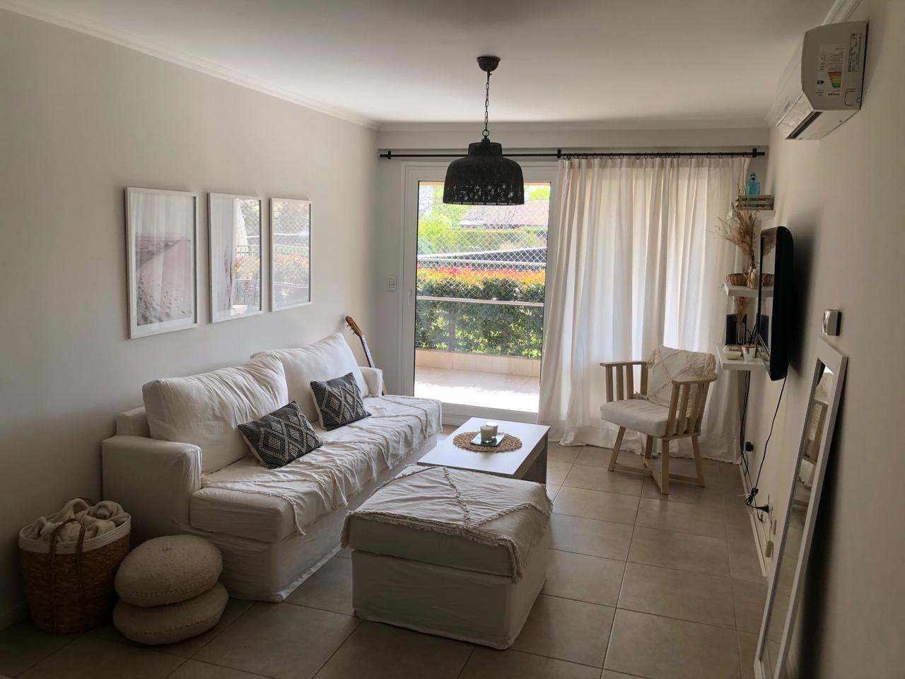
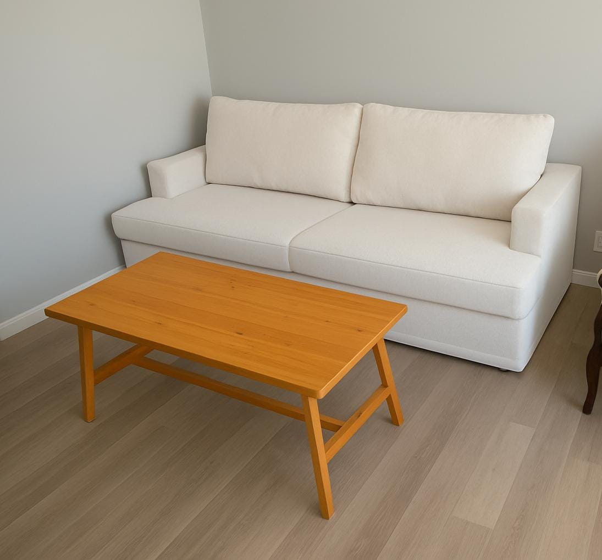

Sillón Martillo
Líneas rectas y diseño contemporáneo. El equilibrio perfecto entre una estructura cúbica y una comodidad envolvente.

Líneas rectas y diseño contemporáneo. El equilibrio perfecto entre una estructura cúbica y una comodidad envolvente.

Respaldo y apoyabrazos a la misma altura para crear una silueta uniforme y moderna. Ideal para ambientes de vanguardia.

Almohadones de respaldo rellenos con vellón siliconado premium. Máxima suavidad dentro de una estructura firme y duradera.

Personalizalo con patas de madera para un look escandinavo o bases metálicas para un estilo industrial puro.